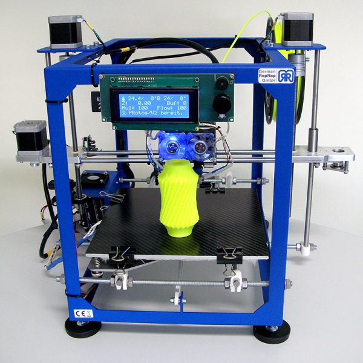

3D-принтер — это периферийное устройство, использующее метод послойного создания физического объекта по цифровой 3D-модели.
С начала нового тысячелетия понятие «3D» прочно вошло в нашу повседневную жизнь. В первую очередь, мы связываем его с киноискусством, фотографией или мультипликацией. Но едва ли сейчас найдётся человек, который хотя бы раз в жизни не слышал о такой новинке, как 3D-печать.Что же это такое и какие новые возможности в творчестве, науке, технике и повседневной жизни несут нам технологии трехмерной печати, мы и попытаемся разобраться в статье, приведенной ниже.